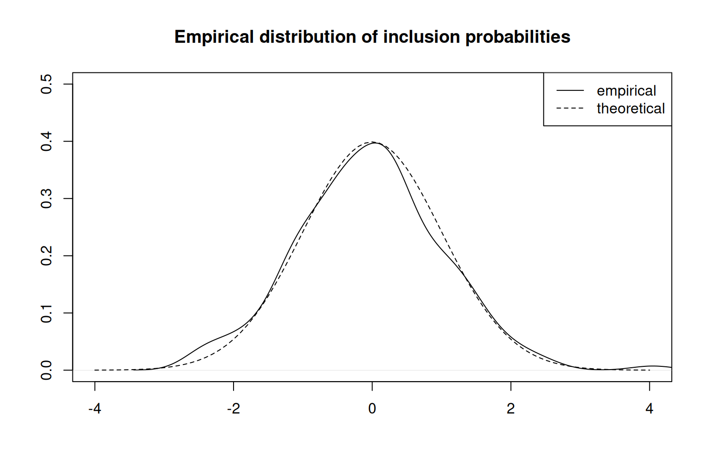

Sequential Poisson sampling is a variation of Poisson sampling for drawing probability-proportional-to-size samples with a given number of units. It’s a fast, simple, and flexible method for sampling units proportional to their size, and is often used for drawing a sample of businesses. The purpose of this vignette is to give an example of how the functions in this package can be used to easily draw a sample using the sequential Poisson method. More details can be found on the help pages for the functions used in this vignette.
Drawing a sample of businesses
Consider the problem of drawing a sample of businesses in order to measure the value of sales for the current quarter. The frame is a business register that gives an enumeration of all businesses in operation, along with the revenue of each business from the previous year and the region in which they are headquartered.
library(sps)
set.seed(123654)
frame <- data.frame(
revenue = round(rlnorm(1e3) * 1000),
region = sample(1:3, 1e3, prob = c(0.2, 0.3, 0.5), replace = TRUE)
)
head(frame)
#> revenue region
#> 1 2676 1
#> 2 2158 1
#> 3 2046 3
#> 4 537 2
#> 5 266 3
#> 6 1991 1Associated with each business is a value for their sales for the current quarter, although these values are not observable for all businesses. The purpose of drawing a sample is to observe sales for a subset of businesses, and extrapolate the value of sales from the sample of business to the entire population. Sales are positively correlated with last year’s revenue, and this is the basis for sampling businesses proportional to revenue.
Budget constraints mean that it’s feasible to draw a sample of 100 businesses. Businesses operate in different regions, and so the sample will be stratified by region. This requires determining how the total sample size of 100 is allocated across regions. A common approach is to do this allocation proportional to the total revenue in each region.
allocation <- with(frame, prop_allocation(revenue, 100, region))
allocation
#> 1 2 3
#> 19 32 49With the sample size for each region in hand, it’s now time to draw a sample and observe the value of sales for these businesses. In practice this is usually the result of a survey that’s administered to the sampled units.
sample <- with(frame, sps(revenue, allocation, region))
survey <- cbind(frame[sample, ], sales = sales[sample])
head(survey)
#> revenue region sales
#> 8 1422 3 1571
#> 25 2741 2 1843
#> 31 580 1 897
#> 37 4508 2 8659
#> 38 1007 3 1804
#> 42 2380 3 4740An important piece of information from the sampling process is the design weights, as these enable estimating the value of sales in the population with the usual Horvitz-Thompson estimator.
survey$weight <- weights(sample)
head(survey)
#> revenue region sales weight
#> 8 1422 3 1571 11.254659
#> 25 2741 2 1843 6.070412
#> 31 580 1 897 27.752969
#> 37 4508 2 8659 3.690994
#> 38 1007 3 1804 15.892875
#> 42 2380 3 4740 6.724422The Horvitz-Thompson estimator is (asymptotically) unbiased under sequential Poisson sampling, so it should be no surprise that the estimate is fairly close the true (but unknown) value of sales among all businesses.
ht / sum(sales) - 1
#> [1] 0.01325931But in practice it’s not possible to determine how far an estimate is from the true value in the population. Instead, a common measure of the quality of a estimate is the coefficient of variation, and this requires estimating the variance of the Horvitz-Thompson estimator.
A general approach for estimating the variance of the Horvitz-Thompson estimator is to construct bootstrap replicate weights from the design weights for the sample, compute a collection of estimates for the total based on these replicate weights, and then compute the variance of this collection of estimates.
repweights <- sps_repweights(weights(sample))
var <- attr(repweights, "tau")^2 *
mean((colSums(survey$sales * repweights) - ht)^2)
sqrt(var) / ht
#> [1] 0.09666341There is also an analytic estimator for the variance of the Horvitz-Thompson estimator under sequential Poisson sampling. It’s less flexible than the bootstrap estimator, but is more precise.
Coordinating samples
Suppose another sample of businesses from the same frame is needed for a purpose other than measuring the value of sales. It is often desirable to negatively coordinate these samples so that the same businesses are not inundated with responding to surveys, without affecting the statistical properties of the sample. This sort of coordination is easily done by associating to each business a permanent random number, and suitably “rotating” them to reduce the overlap between both samples.
frame$prn <- runif(1000)
head(frame)
#> revenue region prn
#> 1 2676 1 0.72614569
#> 2 2158 1 0.30042829
#> 3 2046 3 0.09393538
#> 4 537 2 0.31786097
#> 5 266 3 0.23796557
#> 6 1991 1 0.80298366Permanent random numbers can be used with methods other than sequential Poisson—the procedure is the same for any order sampling scheme (including simple random sampling).
pareto <- order_sampling(\(x) x / (1 - x))
sample <- with(frame, sps(revenue, allocation, region, prn))
parsample <- with(frame, pareto(revenue, allocation, region, (prn - 0.5) %% 1))
length(intersect(sample, parsample)) / 100
#> [1] 0.09Although there is still a meaningful overlap between the units in both samples, this is roughly half of what would be expected without using permanent random numbers.
Topping up
The sequential part of sequential Poisson sampling means that it’s easy to grow a sample. Suppose that there is a need to sample 10 more businesses in region 1 after the sample is drawn. Simply adding 10 units to the allocation for region 1 results in a new sample that includes all the previously sampled units, so the extra units can be surveyed without discarding previously-collected data or affecting the statistical properties of the sample.
sample <- with(frame, sps(revenue, allocation, region, prn))
sample_tu <- with(frame, sps(revenue, allocation + c(10, 0, 0), region, prn))
all(sample %in% sample_tu)
#> [1] TRUEAs with any proportional-to-size sampling scheme, there is a critical sample size after which some units become take-all units. If these units are not already in the sample then they can “bump” previously sampled units, requiring a larger sample size to keep all the previously sampled units in the new sample. This can be seen by finding the sample size at which each unit enters the take-all stratum.
Map(\(x) head(becomes_ta(x)), split(frame$revenue, frame$region))
#> $`1`
#> [1] 86 98 102 174 161 160
#>
#> $`2`
#> [1] 278 157 261 254 110 284
#>
#> $`3`
#> [1] 283 500 500 344 449 482But this is rare in practice. For this example there is no point at which increasing the sample size drops a unit that was previously included in the sample. Seeing this in action requires different data.
set.seed(13026)
x <- rlnorm(10)
u <- runif(10)
becomes_ta(x)
#> [1] 10 4 5 5 5 9 8 10 9 9
sample <- sps(x, 4, prn = u)
sample %in% sps(x, 5, prn = u)
#> [1] TRUE TRUE TRUE FALSEThe solution to this problem is to simply increase the size of the sample until all previously sampled units are included.
Bias in the Horvitz-Thompson estimator
Despite it’s simplicity, sequential Poisson sampling is only asymptotically proportional to size. This means that the Horvitz-Thompson estimator can be biased in small samples, although this bias is usually negligible for real-world sample sizes.
sampling_distribution <- replicate(1000, {
sample <- with(frame, sps(revenue, allocation, region))
sum(sales[sample] * weights(sample))
})
summary(sampling_distribution / sum(sales) - 1)
#> Min. 1st Qu. Median Mean 3rd Qu. Max.
#> -0.1043517 -0.0208040 0.0016497 0.0005927 0.0215847 0.1426320More generally, the distribution of inclusion probabilities is usually close to what is expected if sequential Poisson sampling was exactly proportional to size.1
set.seed(123456)
n <- 5e3
frame1 <- subset(frame, region == 1)
pi_est <- tabulate(
replicate(n, sps(frame1$revenue, allocation[1])),
nbins = nrow(frame1)
) / n
pi <- inclusion_prob(frame1$revenue, allocation[1])
dist <- (pi_est - pi) / sqrt(pi * (1 - pi) / n)
plot(
density(dist, na.rm = TRUE),
ylim = c(0, 0.5), xlim = c(-4, 4),
ylab = "", xlab = "",
main = "Empirical distribution of inclusion probabilities"
)
lines(seq(-4, 4, 0.1), dnorm(seq(-4, 4, 0.1)), lty = "dashed")
legend("topright", c("empirical", "theoretical"), lty = c("solid", "dashed"))